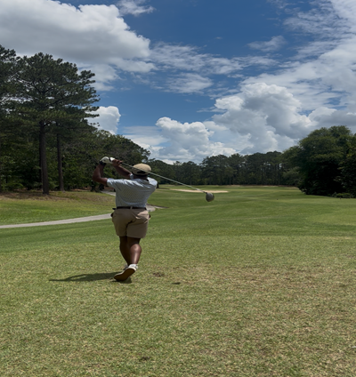

Key factors for Improvement
- Patience
- Attention to Detail
- Skill Mastery
- Strategy
Golf is one of the most difficult sports to initially learn and become an expert in. There are many variables when it comes to improving your golf game. Once you become good, golf becomes an extremely fun sport to play either alone or with a couple of buddies. In the following paragraph one of the most important factors to improving your golf game will be discussed; patience.
Although it may seem as if pateience is a very obvious and simple factor beginners don't even consider it. For most people, when first starting off you will be really bad. Struggling to even make contact with your club to the ball. But the longer you stick to it and make adjustments the better off you will be.
Main Page About Me